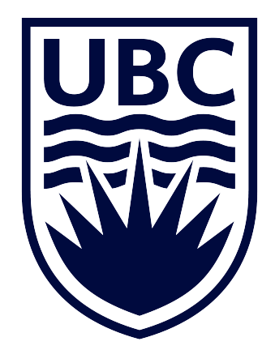

Interests: design, code, data visualization, coffee, pets, running
Education

University of British Columbia
Computer Science, BA - Sep 2020 - Dec 2024
Awards: Thunderbird Leadership Award - Awarded to students who have achieved good academic standing and have demonstrated outstanding athletic and/or leadership abilities.
As a course project for CPSC 447, my three group members and I fully designed a successful visual presentation of the data contained in the
Indian Movie Database, allowing users to interact with the dashboard for tasks such as finding frequent collaborators, discovering win and nomination trends, and examining individual actors' accolades. My focus was on the Actor Network.
Successfully collaborated with three teammates in the implementation of the interactive multi-view dashboard, featuring a clustered network graph with annotations, filtering, selection, tooltips, and bidirectional linking with other views.
Intramurals Management Database - Sep 2023 - Dec 2023
Skills: JavaScript, SQL, MySQL, React.js, Material UI, Node, Express, Postman.
As a course project for CPSC 304 and in collaboration with two other students, fully designed a database for modeling an academic institution's intramural sports program. The database provides functionality
for games, staff, and player logistics and management. My focus was the domain of activities and teams.
Implemented a custom CRUD API using JavaScript, SQL, Express, and Postman.
Designed and executed a full user interface using React.js and Material UI that allowed the user to create, delete, and update teams, activities, individuals, locations, and games.
Fully designed an effective visual presentation of UBC Recreation Intramurals' Leagues registration data from 2012 - 2022, allowing viewers to search for trends in registration numbers, compare league sizes, and analyze league-specific tier registration.
Successfully implemented an interactive data dashboard with three views, featuring dynamic filtering, selection, tooltips, and linking between views using HTML/CSS, javaScript, and d3.js.
Processed, cleaned, and reduced over 8000 data items to 225 items that retained all key attributes using Excel and Google Sheets.
My team placed 2nd out of 108 participants in the Aritzia x girlCode hackathon due to our ML powered personal stylist, which provided an effective solution to the prompt requesting a tech solution that personalized and enhanced the e-commerce experience.
Fullstack development of the supporting app for our ML powered personal stylist, which includes a user interface, user survey, and JSON data persistence, using Java and Android Studio.
Successfully collaborated with three other teammates from different scientific and academic disciplines to deliver a timely and complete presentation to a panel of four judges.
View the repository for the app and the link to the figma mockup at the github
repository.
Experience
Assistant Director - Vancouver, BC
UBC Recreation, April 2022 - April 2023, April 2024 - Current
Supervised leagues games and ensured smooth gameplay by signing participants in, answering participant
questions and concerns, directing referees and players, and providing first aid and care when necessary.
Interviewed and evaluated officials for hiring, resulting in over five hires.
Successfully scheduled referees for over 70 soccer games using communication through both Slack and email, and
scheduling using Google Sheets.
Responded to and managed participant concerns over Outlook email
Student (IT Development) - Vancouver, BC
natural Resources Canada, May 2024 - August 2024
Created a server monitor program that measured response time, server status, and total server operation time in javascript, d3.js, and python,
resulting in easy server monitoring and bug identification. Program featured a functional GUI and written logging.
Rapidly answered IT tickets related to the maintenance and access of the NRCan IFS Assyst system.
Documented the flow of the Software License Management process.
Attended and contributed to weekly and bi-weekly meetings on Microsoft Teams.
Director of Ultimate Frisbee and Roundnet - Vancouver, BC
UBC Recreation, April 2023 - April 2024
Hired, trained, mentored, and managed six Assistant Directors over the course of a year, by holding weekly crew
meetings and regular 1 on 1 mentoring.
Oversaw the successful operation of both the Ultimate League and the Roundnet League, each with over 30 teams,
by managing and directing the scheduling, eligibility, and communications of the games.
Attended weekly and bi-weekly Leagues Board of Directors and Board of Directors meetings.
Paddling Coordinator - Vancouver, BC
British Columbia Mobility Opportunity Society, May 2023 - August 2023
Safely and successfully conducted transfers into kayaks and stationary wheelchairs using a lift, transfer boards, or
other client recommended methods.
Communicated and connected with individuals of a wide range of care needs, providing them with a satisfying and
fun outdoor activity.